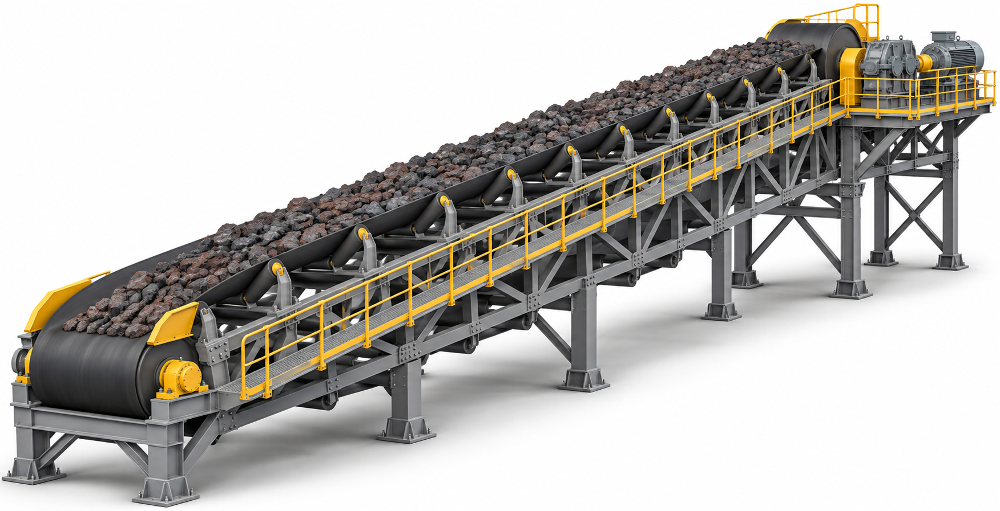

BLOCO 1 • RECOMPOSIÇÃODa emenda à
Da emenda à
recomposição final.
Continental: lançamento e emenda concluídos.
Mecânica: atividades em execução nos TR15–20.
TR09–14 9 de 9 itens concluídos por TRRecomposição em andamento
